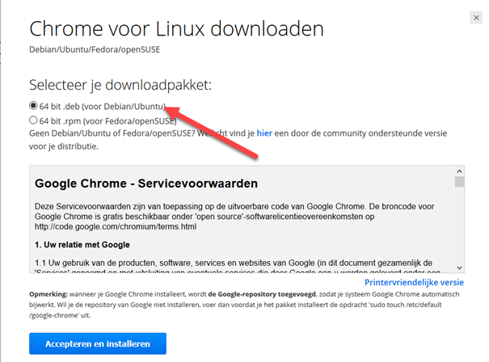
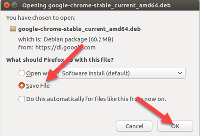
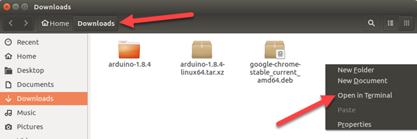
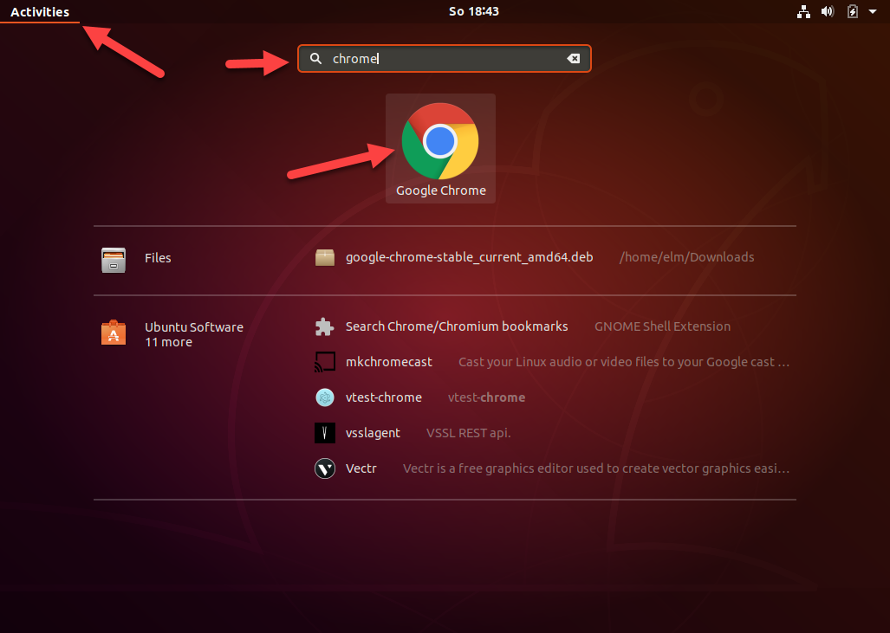

Google Chrome staat in geen enkele repository die je machine kent, maar Google levert wel een
.deb bestand. Je downloadt het zelf en je installeert het met dpkg. Onderweg
loop je tegen een dependency aan, en dat is de bedoeling: het is precies wat apt op de
vorige pagina's voor je deed.
Surf vanaf je Ubuntu-machine naar google.be en zoek de downloadpagina van Chrome.
Kies 64 bit .deb (voor Debian/Ubuntu).

.deb en .rpm is de
keuze tussen twee families van distributiesFirefox vraagt wat het met het bestand moet doen. Kies Save File, zodat het in je map Downloads terechtkomt in plaats van meteen in de winkel te openen.

Open je map Downloads in Files, klik met de rechtermuisknop op een lege plek en kies Open in Terminal. Zo start je terminal meteen in de goede map.

Installeer het pakket. De -i staat voor install.
Typ go en druk op TAB. De rest van de naam wordt aangevuld, en zo
maak je ook geen tikfout in het versienummer.
De kans is groot dat het misloopt, en dan lees je in de uitvoer waarom.
Selecting previously unselected package google-chrome-stable. (Reading database ... 210304 files and directories currently installed.) Preparing to unpack google-chrome-stable_current_amd64.deb ... Unpacking google-chrome-stable (61.0.3163.91-1) ... dpkg: dependency problems prevent configuration of google-chrome-stable: google-chrome-stable depends on libappindicator1; however: Package libappindicator1 is not installed. dpkg: error processing package google-chrome-stable (--install): dependency problems - leaving unconfigured Errors were encountered while processing: google-chrome-stable
Chrome heeft een bibliotheek nodig die niet op je machine staat. dpkg pakt één
pakket uit en gaat niets bijhalen, dus hij zet Chrome half geïnstalleerd neer en stopt.
Laat apt het afmaken. De optie -f staat voor fix broken: zoek
uit wat er halverwege blijven steken is, haal wat ontbreekt en installeer verder.
Zoek Chrome op tussen je toepassingen en start het.

Op de downloadpagina van Google staat het onderaan: bij de installatie wordt de repository van Google
aan je machine toegevoegd, zodat Chrome vanaf dan wel automatisch bijgewerkt wordt. Dat is
uitzonderlijk voor een .deb, en het is de reden waarom Chrome hier wel bij blijft en
de programma's van de volgende twee pagina's niet.